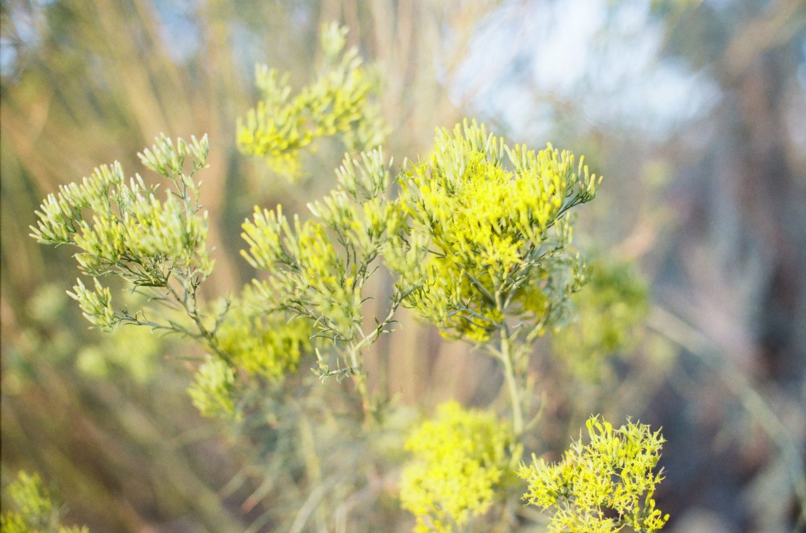

Why "Be Outside"
Born on a hillside. Built for every classroom.
During COVID, I hiked to the mouth of Birch Canyon near my house, broadcast it live on Zoom, and taught an outdoor poetry lesson in real time. Students stepped outside wherever they were, into backyards, onto apartment steps and driveways, wrote their own poems, and came back to share.
It worked, and it stuck. Be Outside has always been about getting people out from behind the desk. Today that means two things: outdoor learning that brings real places into any classroom, and AI tools that give educators and business leaders the time to get outside themselves.
The same filmed walks now open and close my workshops as Nature Walks: a few calm minutes "outside" for teachers and business teams, even on a snowy Tuesday.
The outdoors is for everyone, including teachers who feel stuck inside.